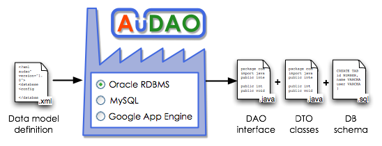

This is a Java DAO, DTO and SQL script generator for
MySQL, Oracle
and Google App Engine.
The input is a source configuration xml file which describes the tables (entities) and their relations. The output is a set of SQL scripts and Java DAO layer which allows you to access your data structures without any knowledge of the underlying datastore API.
For more information about DAO concept, please see Wikipedia or DAO Pattern.
The generated Java DAO layer uses plain JDBC to access database (MySQL, Oracle). No other frameworks or technologies are needed to run ! The code is fully under your control.
The generated Java DAO layer for Google App Engine (GAE) uses directly the GAE Datastore API now (using DatastoreService). It is also possible to generate DAO layer over JDO (using PersistenceManager), but it is not recommended to use it for production environments due to performance issues.
The generated Java code requires Java 1.5 or higher.
Write only one configuration file and let AuDAO generate all the following files: